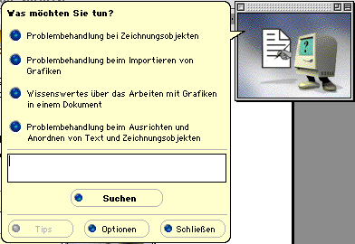
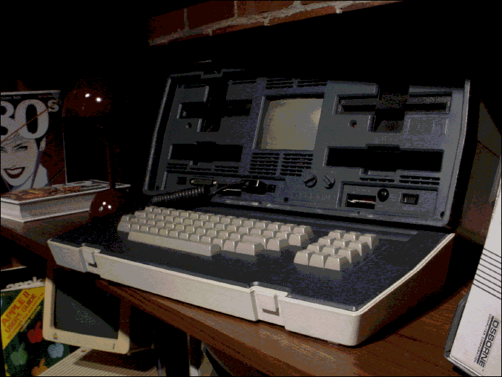
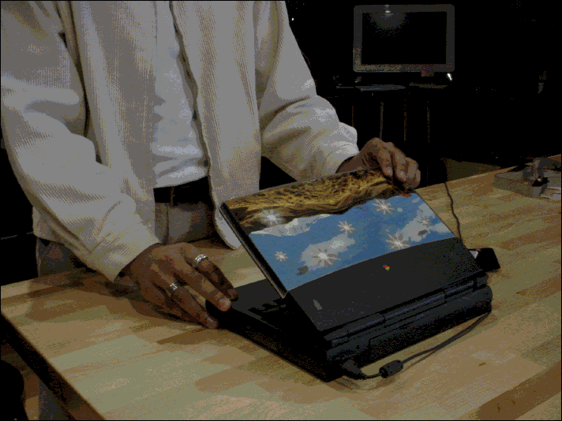

January 15th, 2026
This article was written entirely on an Apple PowerBook 1400c (1996) using Microsoft Word 98, and exported directly into HTML. You can read my experience in using it at the bottom of this article.
--
Well, Word is in German. More annoyingly spell-check is German too, and, living up to heritage, is working aggressively well. Every word I type is given the squiggle of shame.

Clippy, aka Little Mac
At the very least I can type words now. Clippy (the cartoon assistant Microsoft Office used to come with) is a very cute Macintosh with feet on the Office for Mac. I’m sure he has a German name I couldn’t recognize in the text, but he will be referred from here on as Little Mac. Little Mac blocked my ability to do anything till I answered his multiple-choice questions (also in German of course). The extent of my German comes from watching Top Gear as a kid, so I did not realize I was choosing to get the ‘How to use Office’ performance.
Update: With the help of an LLM I was able to get spell-check switched to English. One of the core goals around using these older machines for writing was to avoid using any modern tools or LLMs, but alas here we are. We should be good to go now though. I will just avoid doing any formatting or changes that aren’t supported by a visual icon J
You may ask, why not just switch the rest of the application's language to English? This is of the era where software (and operating systems for that matter) did not ship multi-language. The language you got was the one you were stuck with. So then, why not just re-install the English version? I’ll explain soon, but the pain in getting this working has made me decide to learn German instead. Vorwarts. (the a is supposed to have an umlaut).
This wasn’t the article I had in mind that I wanted to write first, but my experience in getting this all setup has gotten my mind racing on how good we have it these days. The future is so easy, and in some ways, so boring.
The selection process
You can read why I’m using old computers to do my writing
here. TLDR: To get hands on perspective on the history of computing and what went in to delivering the future we live in. My goal while using the machines is to be as period correct as possible with setup and use.I'll admit that choosing the PowerBook felt like cheating a little because I went in with very specific criteria. I hadn’t been able to do any writing in a while for a variety of reasons. Travel getting in the way being one of them. So I wanted something portable that I could take with me on trips or even just around the office. That limited the selection as it was, and I was afraid of what United might do to the carry-on size Osborne Executive when I show up 3 minutes before boarding closes and the overhead bins are full (by the way, it should fit in the bins, just barely).

Osborne Executive (shot on a floppy disk Sony Mavica)
That left a dozen or so machines to choose from, and this beauty just stood out to me. The "BookCover" laptop skin gives it so much personality, especially amongst the sea of gray and silver (although I quite love the brutalist designs of this era). Originally, the � PowerBook 1400c (1996) came with 6 inserts to choose from for this book cover, as well as a template installed to design and print your own- incredibly cool. The keyboard was also one of the best I have used on any machine, better than even some of the custom mechanical keyboards I have. Perfectly creamy, with just the right amount of feedback and travel, it's so good that I've been finding excuses to write more. On the note of cheating, I wanted something that I felt would be the least amount of work to get working (repair/reliability wise) and I selfishly wanted something with a built-in 3.5in floppy drive to make getting files off easier (the older or smaller PowerBooks do not have them built-in). While it does have a built-in battery, it is long dead. Mostly portable then.

� PowerBook 1400c (shot on a floppy disk Sony Mavica)
Getting it ready for writing
The only word processor that came installed with this machine was SimpleText, a very basic TextEdit/Notepad style app. That wouldn’t have been what people would have used back then, we had to get the ideal choice of word processor for the time, Microsoft Word 98. I thought this would be pretty easy given the machine I had chosen was one of the newer ones in the collection. It was not.
Of course, this machine is still 30 years old. It does not have WiFi, and it being a laptop introduces some unique challenges. While this machine does have networking/Internet capabilities, and I will embark on a project to get that running at some point, it cannot access much of the modern Internet regardless given security and standards have changed, nor was Internet Explorer or Netscape Navigator installed anyways. A bit of chicken and egg.
Regardless, most software in 1997 was still bought physically so I was expecting to do it the period correct way, floppy disks!
Unfortunately, I did not have a copy of Word 98 on floppy already. While not period-correct, the Internet is plentiful, and I was going to use it. Finding downloadable versions for Word proved to be very easy (shout-out MacRepository), but finding one that would work proved to be more difficult. A couple of issues:
Luckily, I struck gold and found a 128MB CompactFlash card in the junk box with a reader that could go into the PC card slot. Jackpot, 30 floppies not needed! Meanwhile, DoorDash delivered me a CF reader for my modern Mac in 30 minutes. With some work, I had the file.
All in all, that was a few hours worth of trial and error, but finally, with all the pieces together, it was time to install. Transferring 44MB was slow, but extracting was incredibly slow, taking a few hours. I left it overnight to finish extracting. I never thought I could be so excited to use Word, but it was all I could think about on my way to the office (to use Office). I pressed the power button, heard the beautiful chime, and then checked emails for 5 minutes while the PowerBook booted up. Then for another 10 minutes while Word finished installing and started up for the first time. I finally looked up when I heard a funny noise. ‘Wilkommen bei Microsoft Word’ says Little Mac. I guess it’s time to learn German.
We have it so easy
There were two main things that stood out to me in this whole ordeal. The first, was how complex the everyday use of computers could be in the 90s. Nothing I did would have been considered ‘advanced’- pain was just normal. It goes to show how much we take for granted these days. Storage and hardware limitations, the messy world of mismatched ports and standards, acquiring the right software (in the right language), reliably transferring files across devices. All of this is just... solved, or abstracted away entirely. It is puzzling to think of all of the advancements that had to happen to deliver the future we live in. The brains, the passion, and the things that needed to be dreamed of and created in the last 30 years to go from this experience, to being able to download applications 100x the size, directly onto our phones that are 10,000-100,000x more powerful, practically instantly. The future may not be so bad after all.
On that note, the second, and most persistent thought through this experience was that the future is really, really fast. It was common to walk away from the PowerBook while it caught up- grab a snack, talk to someone or get some other work done. Even if you ignore the hours in getting Word installed, just using the machine requires patience. Reading one of the images in this post off the floppy disks, for example, was a few TikTok scrolls worth. Even just simple things like switching applications isn’t quite instant as you wait for it to render the window. We are so programmed to get things instantly, I mean, I DoorDashed a CF reader from BestBuy because I was so impatient. Even the slightest wait time is infuriating to us these days. The old world in comparison was much slower and simpler in a lot of ways, and I sort of loved the escape. I found myself giving the PowerBook space in a way I wouldn’t give a modern slow Windows machine. I wasn’t annoyed at all because I felt that the machine was really trying its best, using the most of what it had to offer. I knew it wasn’t slow because of bloat and really got to understand it. I would often anticipate that it would need some time to do what I asked. I learned what not to ask it, and stuck to the things it could do well, and there were things that it did really well, like writing this post on Word, that genuinely felt no slower than a modern machine. I felt myself really cheering the PowerBook on and treating it more like a pet than machine.
After just a few days of using the PowerBook I had done more writing than I had done in the last couple of months. Marketing team is ecstatic. Investors are getting their updates for once. Maybe it was Clippy Little Mac, maybe it was the lack of distractions, or maybe, just maybe, the PowerBook had re-taught me patience.